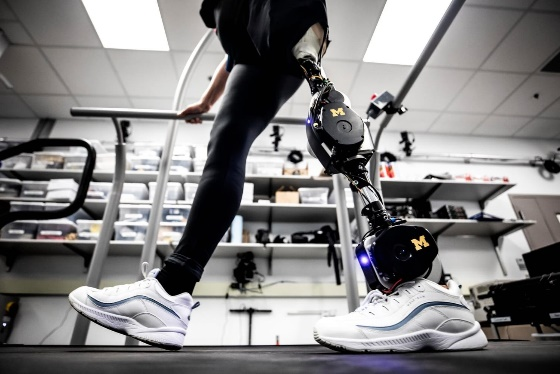

Ir a pagina de inico
Funcionamiento: Es mediante la ejecución de un conjunto de lenguajes de programación que establecen las principales funciones, además de la incorporación de sensores que consolidan los objetivos de automatización para poder ejecutar las referencias por: fuerzas, aceleración
Características
Tienen tres puntos de anclaje que le dan una flexibilidad muy parecida a la de la pierna humana y más estabilidad, tienen el potencial de proporcionar una marcha mucho más cómoda, pero uno de sus inconvenientes es la rigidez en las articulaciones.
PRECIO:8,000 pesos

PRECIO:8,000 pesos